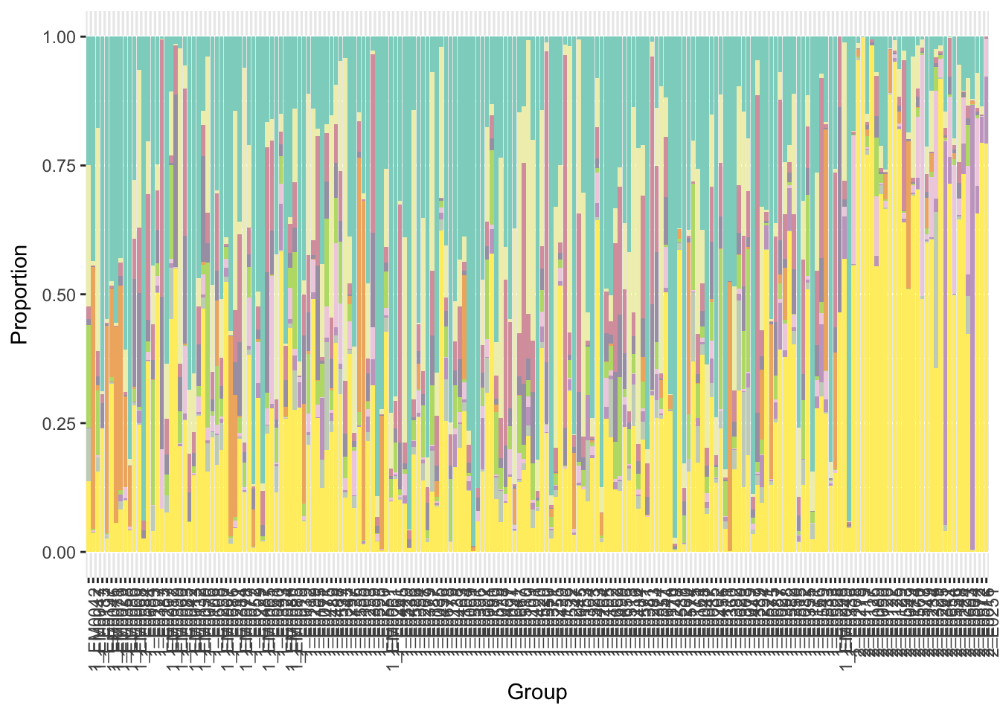
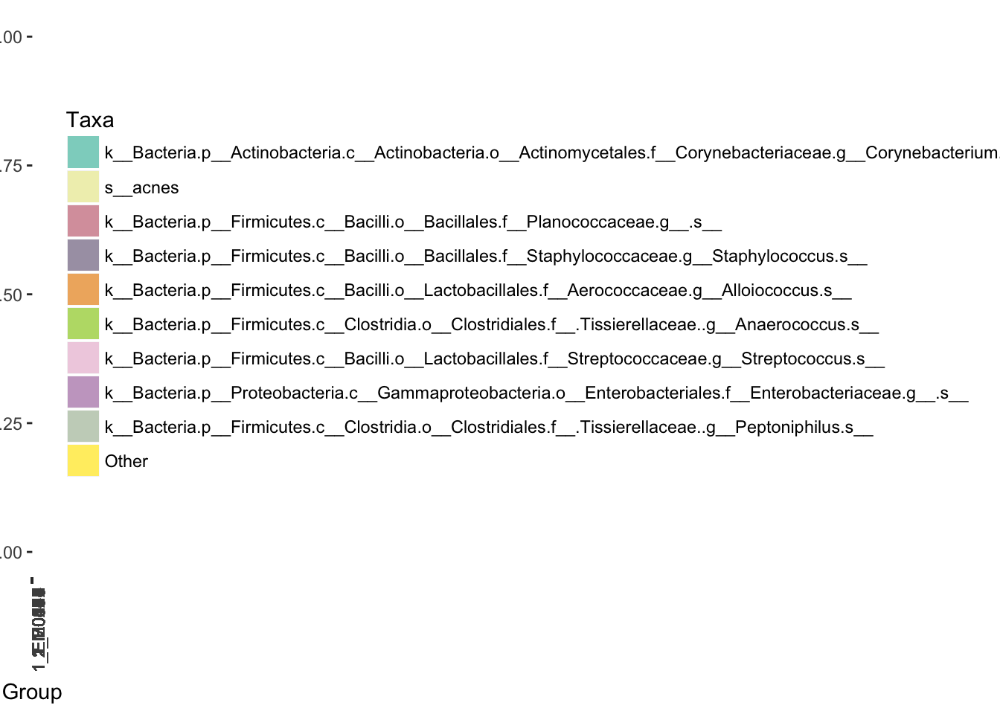
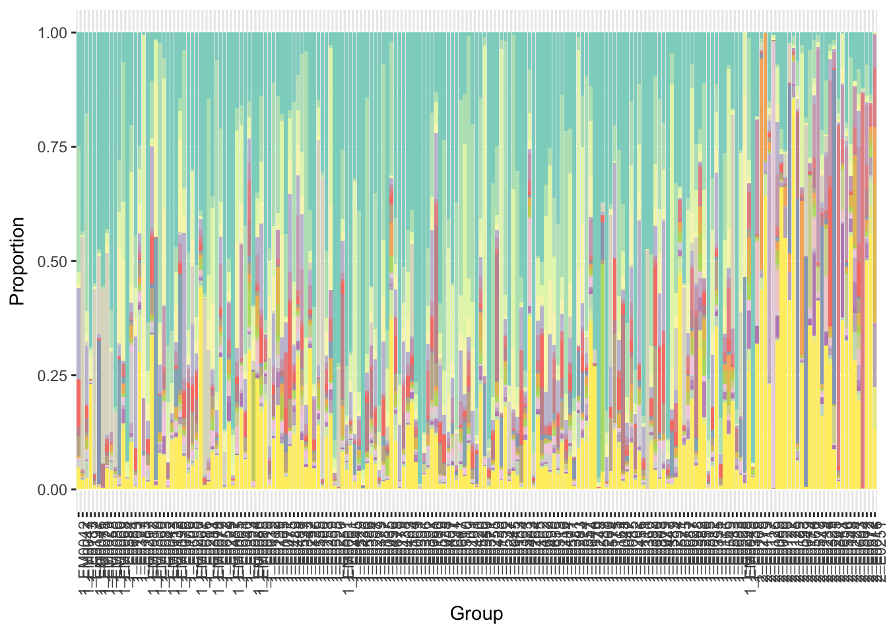

Stacked bar plots
JNP
Warning in as.POSIXlt.POSIXct(Sys.time()): unknown timezone 'zone/tz/2017c.
1.0/zoneinfo/America/Chicago'Last updated: 2017-12-21
Code version: 38eaa4e
\(~\)
Packages
library(knitr)
library(kableExtra)
library(dplyr)
library(reshape)
library(metagenomeSeq)
library(ggplot2)\(~\)
Data
load("../data/nasal_GOM.rdata")
MRobjMRexperiment (storageMode: environment)
assayData: 616 features, 197 samples
element names: counts
protocolData: none
phenoData
sampleNames: EM0042 EM0047 ... E0168 (197 total)
varLabels: StudyID age ... GOM (95 total)
varMetadata: labelDescription
featureData
featureNames: denovo6 denovo17 ... denovo42992 (4423 total)
fvarLabels: Kingdom Phylum ... Species (7 total)
fvarMetadata: labelDescription
experimentData: use 'experimentData(object)'
Annotation: \(~\)
Functions
grabGroupedMeans <- function(obj,phenotype_name,lvl,...){
meansOfMeans <- function(x) colMeans(prop.table(as.matrix(x),1))
if(length(phenotype_name)==1) pd = pData(obj)[,phenotype_name]
else pd = phenotype_name
mat= aggTax(obj,lvl=lvl,out='matrix')
pd = factor(pd)
groupMeans = by(t(mat),pd,meansOfMeans,simplify=TRUE)
groupedMeans = do.call("cbind",groupMeans)
colnames(groupedMeans) = levels(pd)
groupedMeans
}
plotBar <- function(obj, lvl, cl=colnames(obj), n=10, norm=FALSE, log=FALSE, ord=FALSE, orderby='Other',...){
if (class(obj) == "MRexperiment") {
mat = MRcounts(obj, norm = norm, log = log)
if(length(lvl)==1){
lvl = fData(obj)[,lvl]
}
}
else if (class(obj) == "matrix") {
mat = obj
}
else {
stop("Object needs to be either a MRexperiment object or matrix")
}
prop = prop.table(mat,2)
aggProp = aggregateByTaxonomy(prop,lvl,out='matrix')
ordIndex = order(rowSums(aggProp),decreasing=TRUE)[1:n]
Other = 1-colSums(aggProp[ordIndex,])
aggPropSub = cbind(t(aggProp[ordIndex,]),Other)
if(length(unique(cl))!=nrow(aggPropSub)){
cl = factor(cl)
aggPropSub = by(aggPropSub,cl,colMeans)
aggPropSub = Reduce("rbind",aggPropSub)
rownames(aggPropSub) = levels(cl)
cl = levels(cl)
}
propDF = data.frame(Group=cl,aggPropSub)
if(ord){
rord = order(aggPropSub[,orderby])
propDF=propDF[rord,]
cl = reorder(cl,rord); propDF$Group = cl # ???
}
dd = melt(propDF,id.vars=c("Group"),measure.vars=colnames(propDF)[-1])
p=ggplot(dd,aes(Group,value,fill=variable)) + geom_bar(position="fill", stat='identity') +
ylab("Proportion") +
scale_x_discrete(labels = cl,limits=cl)+
theme(axis.text.x = element_text(angle = 90, hjust = 1)) +
labs(fill='Taxa')
return(list(p=p,dd=dd))
}\(~\)
Sample feature composition by clusters
We display results in stacked bar plots. The vertical bars represent 197 samples grouped by clustering membership. Samples in cluster 1 are on the left, and samples in cluster 2 are on the right. Colors in each vertical bar correspond to different species.
MRobj2 = MRobj2[,order(pData(MRobj2)$GOM)]
grps = grabGroupedMeans(MRobj2,'GOM','Species')
getPalette = colorRampPalette(brewer.pal(12, "Set3"))
tmp= MRobj2[,order(pData(MRobj2)$GOM)]
colnames(tmp) = paste(pData(MRobj2)$GOM,colnames(MRobj2),sep="_")
# pdf("../output/step4_stacked_bar_plots.Rmd/n_taxa_stacked.pdf",width=30,height=10)
# for(i in (c(10,20,30,40)-1)){
# x = plotBar(tmp,'Species',n=i)
# y = x$p+ scale_fill_manual(values=getPalette(i+1),guide=FALSE)
# print(y)
# y = x$p+ scale_fill_manual(values=getPalette(i+1))
# print(y)
# }
# dev.off()9 colors
i=9
#for(i in (c(10,20,30,40)-1)){
x = plotBar(tmp,'Species',n=i)
y = x$p+ scale_fill_manual(values=getPalette(i+1),guide=FALSE)
print(y)
y = x$p+ scale_fill_manual(values=getPalette(i+1))
print(y)
#}19 colors
i=19
#for(i in (c(10,20,30,40)-1)){
x = plotBar(tmp,'Species',n=i)
y = x$p+ scale_fill_manual(values=getPalette(i+1),guide=FALSE)
print(y)y = x$p+ scale_fill_manual(values=getPalette(i+1))
print(y)#}29 colors
i=29
#for(i in (c(10,20,30,40)-1)){
x = plotBar(tmp,'Species',n=i)
y = x$p+ scale_fill_manual(values=getPalette(i+1),guide=FALSE)
print(y)
y = x$p+ scale_fill_manual(values=getPalette(i+1))
print(y)#}39 colors
i=29
#for(i in (c(10,20,30,40)-1)){
x = plotBar(tmp,'Species',n=i)
y = x$p+ scale_fill_manual(values=getPalette(i+1),guide=FALSE)
print(y)
y = x$p+ scale_fill_manual(values=getPalette(i+1))
print(y)
#}Session information
R version 3.4.1 (2017-06-30)
Platform: x86_64-apple-darwin15.6.0 (64-bit)
Running under: macOS High Sierra 10.13
Matrix products: default
BLAS: /Library/Frameworks/R.framework/Versions/3.4/Resources/lib/libRblas.0.dylib
LAPACK: /Library/Frameworks/R.framework/Versions/3.4/Resources/lib/libRlapack.dylib
locale:
[1] en_US.UTF-8/en_US.UTF-8/en_US.UTF-8/C/en_US.UTF-8/en_US.UTF-8
attached base packages:
[1] parallel stats graphics grDevices utils datasets methods
[8] base
other attached packages:
[1] ggplot2_2.2.1 metagenomeSeq_1.20.1 RColorBrewer_1.1-2
[4] glmnet_2.0-13 foreach_1.4.4 Matrix_1.2-12
[7] limma_3.34.4 Biobase_2.38.0 BiocGenerics_0.24.0
[10] reshape_0.8.7 dplyr_0.7.4 kableExtra_0.6.1
[13] knitr_1.17
loaded via a namespace (and not attached):
[1] gtools_3.5.0 lattice_0.20-35 colorspace_1.3-2
[4] htmltools_0.3.6 viridisLite_0.2.0 yaml_2.1.16
[7] rlang_0.1.4 glue_1.2.0 bindrcpp_0.2
[10] matrixStats_0.52.2 bindr_0.1 plyr_1.8.4
[13] stringr_1.2.0 munsell_0.4.3 gtable_0.2.0
[16] rvest_0.3.2 caTools_1.17.1 codetools_0.2-15
[19] evaluate_0.10.1 labeling_0.3 Rcpp_0.12.14
[22] KernSmooth_2.23-15 readr_1.1.1 scales_0.5.0
[25] backports_1.1.2 gdata_2.18.0 gplots_3.0.1
[28] hms_0.4.0 digest_0.6.13 stringi_1.1.6
[31] grid_3.4.1 rprojroot_1.2 tools_3.4.1
[34] bitops_1.0-6 magrittr_1.5 lazyeval_0.2.1
[37] tibble_1.3.4 pkgconfig_2.0.1 xml2_1.1.1
[40] assertthat_0.2.0 rmarkdown_1.8 httr_1.3.1
[43] iterators_1.0.9 R6_2.2.2 git2r_0.20.0
[46] compiler_3.4.1 This R Markdown site was created with workflowr